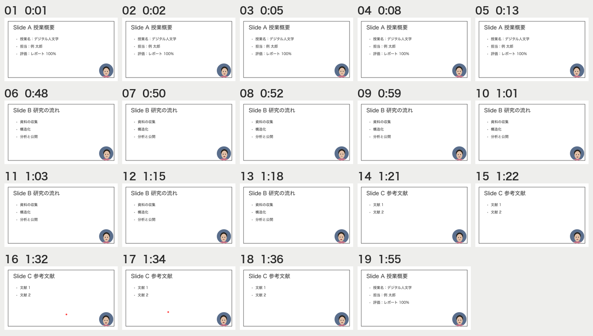
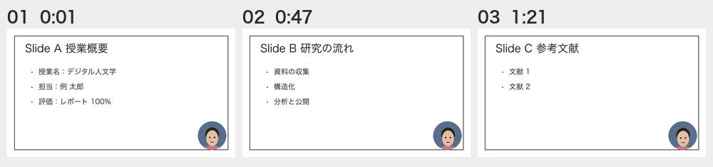
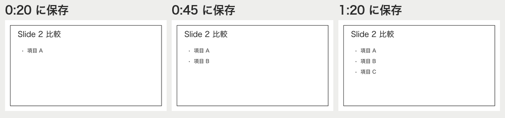
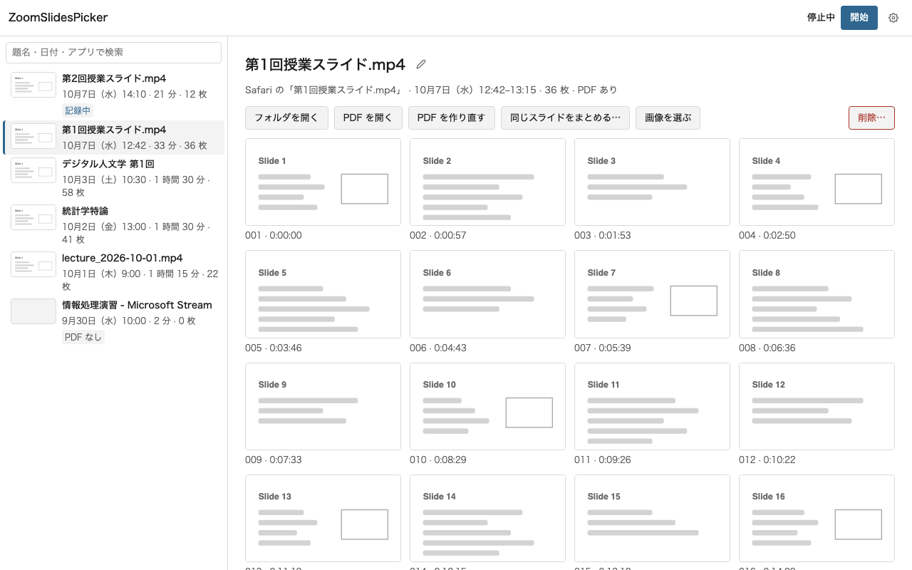
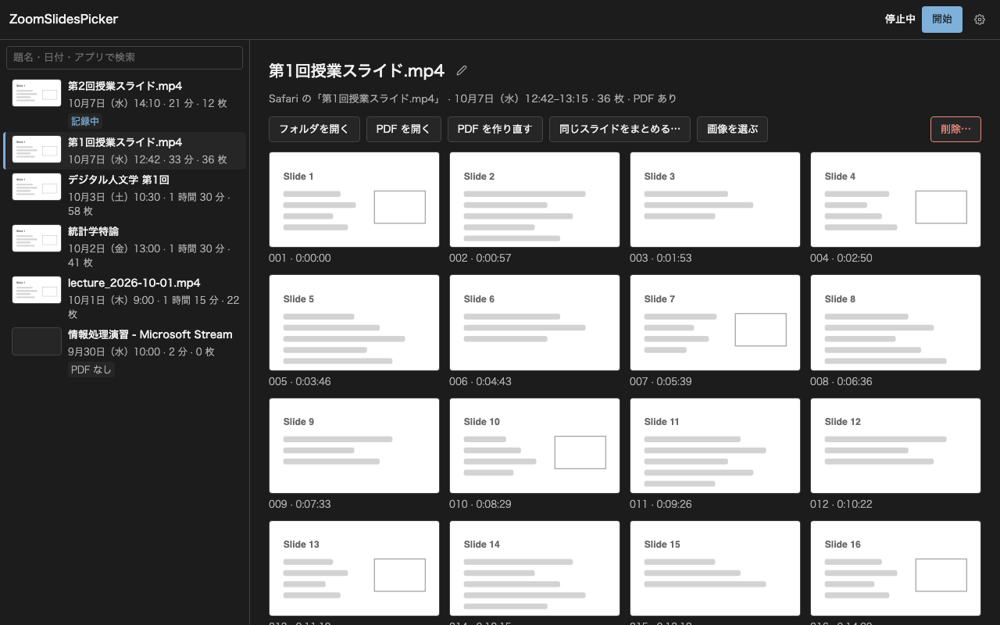
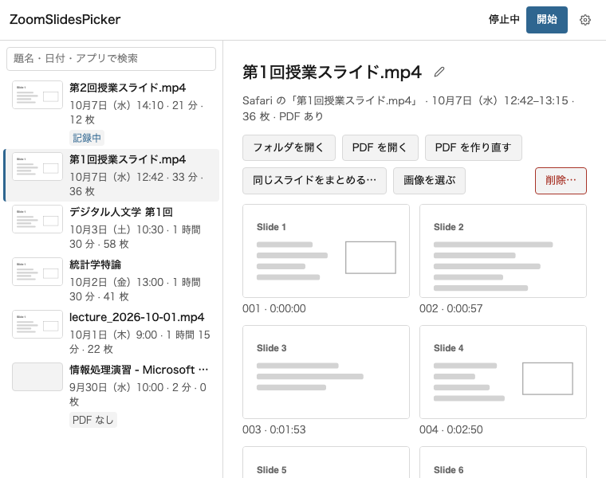
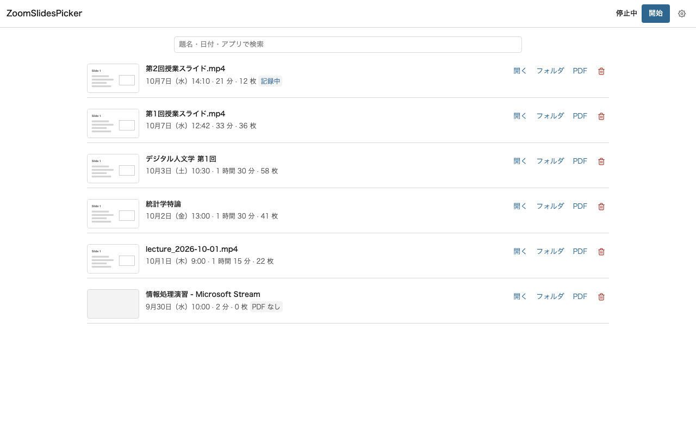
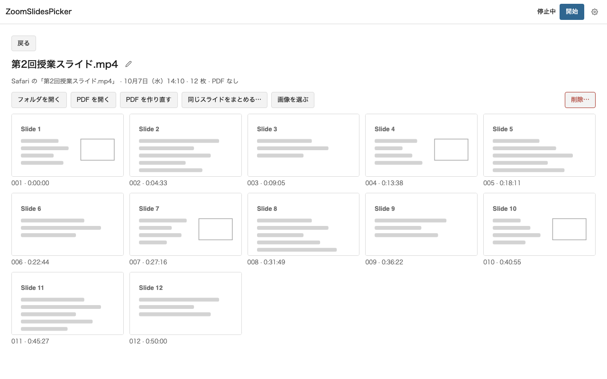

<title>ZoomSlidesPicker 判断シート</title>
<style>
  :root {
    --paper: #f3f3f2;
    --surface: #ffffff;
    --ink: #171717;
    --ink-2: #4f4f4f;
    --rule: #d8d8d8;
    --accent: #2c5d88;
    --accent-soft: #e7eef6;
    --on-accent: #ffffff;
    --danger: #a02c2c;
    --mock: #e9e9e8;
    --on-backdrop: #f4f4f4;
  }
  @media (prefers-color-scheme: dark) {
    :root:not([data-theme="light"]) {
      color-scheme: dark;
      --paper: #131313;
      --surface: #1c1c1c;
      --ink: #ececec;
      --ink-2: #a9a9a9;
      --rule: #353535;
      --accent: #90bbe6;
      --accent-soft: #1d2b39;
      --on-accent: #0e1822;
      --danger: #f0a3a3;
      --mock: #262626;
    }
  }
  :root[data-theme="dark"] {
    color-scheme: dark;
    --paper: #131313;
    --surface: #1c1c1c;
    --ink: #ececec;
    --ink-2: #a9a9a9;
    --rule: #353535;
    --accent: #90bbe6;
    --accent-soft: #1d2b39;
    --on-accent: #0e1822;
    --danger: #f0a3a3;
    --mock: #262626;
  }

  body {
    margin: 0;
    background: var(--paper);
    color: var(--ink);
    font-family: -apple-system, BlinkMacSystemFont, "Hiragino Sans", "Hiragino Kaku Gothic ProN", "Noto Sans JP", "Yu Gothic UI", Meiryo, sans-serif;
    font-size: 15px;
    line-height: 1.75;
  }
  .wrap { max-width: 760px; margin: 0 auto; padding: 0 16px; }
  .sr-only { position: absolute; width: 1px; height: 1px; overflow: hidden; clip: rect(0 0 0 0); white-space: nowrap; }
  :focus-visible { outline: 2px solid var(--accent); outline-offset: 2px; }
  h1, h2, h3 { text-wrap: balance; }
  p { margin: 0 0 12px; }
  ul, ol { margin: 0; padding-left: 1.25em; }
  li + li { margin-top: 6px; }
  code { font-family: ui-monospace, "SF Mono", Menlo, monospace; font-size: 0.9em; }
  .muted { color: var(--ink-2); }

  .top {
    position: sticky;
    top: env(safe-area-inset-top, 0px);
    z-index: 2;
    background: var(--paper);
    border-bottom: 1px solid var(--rule);
  }
  .top .wrap { display: flex; flex-wrap: wrap; justify-content: space-between; gap: 4px 16px; padding-block: 10px; }
  .top .round { margin: 0; font-size: 13px; color: var(--ink-2); }
  .status { display: flex; flex-wrap: wrap; gap: 4px 12px; }
  #progress { font-size: 13px; color: var(--ink-2); font-variant-numeric: tabular-nums; }
  #save { font-size: 13px; color: var(--ink-2); }
  #save.err { color: var(--danger); }

  header.intro { padding-block: 28px 8px; }
  h1 { font-size: 26px; line-height: 1.3; margin: 0 0 12px; font-weight: 700; letter-spacing: -0.01em; }
  .lede { font-size: 16px; margin-bottom: 8px; }
  .block h2 { font-size: 16px; margin: 28px 0 10px; font-weight: 700; }
  dl.state { display: grid; grid-template-columns: max-content 1fr; gap: 6px 16px; margin: 0; }
  dl.state dt { color: var(--ink-2); }
  dl.state dd { margin: 0; }
  @media (max-width: 520px) {
    dl.state { grid-template-columns: 1fr; }
    dl.state dd { margin-bottom: 8px; }
  }

  .finding { padding-block: 14px; border-top: 1px solid var(--rule); }
  .finding h3 { font-size: 15px; margin: 0 0 6px; }
  .finding p { color: var(--ink-2); }

  section.q { padding-block: 28px; border-top: 1px solid var(--rule); }
  .q-title { display: flex; align-items: baseline; gap: 10px; margin: 0 0 6px; font-size: 19px; line-height: 1.4; font-weight: 700; }
  .qid { font-size: 13px; color: var(--ink-2); font-variant-numeric: tabular-nums; font-weight: 500; letter-spacing: 0.02em; }
  .ctx { color: var(--ink-2); margin-bottom: 16px; }
  fieldset.opts { border: 0; margin: 0; padding: 0; min-width: 0; display: grid; gap: 12px; }
  .opt {
    display: grid;
    gap: 10px;
    padding: 14px;
    background: var(--surface);
    border: 1px solid var(--rule);
    border-radius: 8px;
    min-width: 0;
  }
  .opt:has(input:checked) { border-color: var(--accent); box-shadow: inset 0 0 0 1px var(--accent); }
  .opt label { display: grid; grid-template-columns: auto 1fr; gap: 0 12px; align-items: start; cursor: pointer; }
  .opt input { margin: 6px 0 0; width: 18px; height: 18px; accent-color: var(--accent); }
  .opt-title { font-weight: 700; }
  .opt-desc { display: block; font-weight: 400; color: var(--ink-2); margin-top: 2px; }
  .opt-why { display: block; margin-top: 4px; font-size: 14px; }
  .rec {
    display: inline-block;
    margin-left: 8px;
    padding: 0 6px;
    font-size: 12px;
    font-weight: 600;
    line-height: 1.6;
    color: var(--accent);
    border: 1px solid var(--accent);
    border-radius: 4px;
    vertical-align: 1px;
  }
  figure.shots { margin: 0; display: grid; gap: 10px; }
  figure.shots figcaption { font-size: 13px; color: var(--ink-2); }
  button.zoomable { all: unset; display: block; cursor: zoom-in; max-width: 100%; border-radius: 6px; }
  button.zoomable img, figure img {
    display: block;
    width: 100%;
    max-width: 100%;
    height: auto;
    background: var(--surface);
    border: 1px solid var(--rule);
    border-radius: 6px;
  }
  .memo { margin-top: 14px; }
  .memo label { display: block; font-size: 13px; color: var(--ink-2); margin-bottom: 4px; }
  textarea {
    display: block;
    width: 100%;
    box-sizing: border-box;
    font: inherit;
    color: var(--ink);
    background: var(--surface);
    border: 1px solid var(--rule);
    border-radius: 6px;
    padding: 8px 10px;
    resize: vertical;
  }
  .note { font-size: 14px; color: var(--ink-2); margin-top: 10px; }

  details.doc { margin-top: 16px; background: var(--surface); border: 1px solid var(--rule); border-radius: 8px; }
  details.doc > summary { cursor: pointer; padding: 12px 14px; font-weight: 600; }
  .doc-body { padding: 0 16px 16px; overflow-wrap: anywhere; }
  .doc-body h1 { font-size: 20px; margin: 8px 0 12px; }
  .doc-body h2 { font-size: 17px; margin: 22px 0 8px; }
  .doc-body h3 { font-size: 15px; margin: 18px 0 6px; }
  .doc-body li + li { margin-top: 4px; }
  .doc-body ul, .doc-body ol { margin-bottom: 10px; }
  .scroll { overflow-x: auto; margin-bottom: 12px; }
  .doc-body table { border-collapse: collapse; font-size: 14px; min-width: 100%; }
  .doc-body th, .doc-body td { border: 1px solid var(--rule); padding: 4px 8px; text-align: left; vertical-align: top; }
  pre.diff {
    margin: 0;
    padding: 12px 14px;
    overflow-x: auto;
    font-family: ui-monospace, "SF Mono", Menlo, monospace;
    font-size: 12px;
    line-height: 1.55;
    white-space: pre;
  }

  .mock {
    background: var(--mock);
    border: 1px dashed var(--ink-2);
    border-radius: 8px;
    padding: 12px;
    display: grid;
    gap: 10px;
    min-width: 0;
  }
  .mock-tag { font-size: 12px; color: var(--ink-2); letter-spacing: 0.04em; }
  .mock-bar {
    display: flex;
    justify-content: flex-end;
    align-items: center;
    gap: 8px;
    padding: 4px 10px;
    background: var(--surface);
    border-radius: 4px;
    font-size: 12px;
    font-variant-numeric: tabular-nums;
  }
  .mock-icon { width: 12px; height: 12px; border-radius: 3px; background: var(--ink); }
  .mock-pop {
    justify-self: end;
    width: min(280px, 100%);
    box-sizing: border-box;
    background: var(--surface);
    border: 1px solid var(--rule);
    border-radius: 10px;
    padding: 12px;
    display: grid;
    gap: 10px;
  }
  .mock-row { display: flex; flex-wrap: wrap; justify-content: space-between; align-items: center; gap: 6px; font-size: 13px; }
  .mock-row .n { font-variant-numeric: tabular-nums; }
  .mock-thumb { display: block; width: 100%; height: auto; border-radius: 4px; border: 1px solid var(--rule); }
  .mock-primary {
    padding: 6px 10px;
    text-align: center;
    border-radius: 6px;
    background: var(--accent);
    color: var(--on-accent);
    font-size: 13px;
    font-weight: 600;
  }
  .mock-secondary { display: flex; flex-wrap: wrap; gap: 6px; }
  .mock-secondary span {
    padding: 3px 8px;
    border: 1px solid var(--rule);
    border-radius: 6px;
    font-size: 12px;
  }
  .mock-win { background: var(--surface); border: 1px solid var(--rule); border-radius: 10px; overflow: hidden; }
  .mock-title { padding: 6px 10px; font-size: 12px; color: var(--ink-2); border-bottom: 1px solid var(--rule); }
  .mock-body { display: grid; grid-template-columns: minmax(0, 3fr) minmax(0, 2fr); gap: 12px; padding: 12px; }
  .mock-body .side { display: grid; gap: 8px; align-content: start; }
  @media (max-width: 520px) { .mock-body { grid-template-columns: 1fr; } }

  dialog.zoom { border: 0; padding: 0; background: transparent; max-width: min(96vw, 1400px); }
  dialog.zoom::backdrop { background: rgba(0, 0, 0, 0.72); }
  dialog.zoom .zoom-box { display: grid; gap: 8px; }
  dialog.zoom img { display: block; width: 100%; height: auto; background: var(--surface); border-radius: 6px; }
  dialog.zoom .zoom-bar { display: flex; justify-content: space-between; align-items: center; gap: 12px; color: var(--on-backdrop); font-size: 14px; }
  dialog.zoom button {
    font: inherit;
    padding: 6px 12px;
    border-radius: 6px;
    border: 1px solid var(--on-backdrop);
    background: transparent;
    color: var(--on-backdrop);
    cursor: pointer;
  }

  .other textarea { min-height: 96px; }
  .copy-row { display: flex; flex-wrap: wrap; align-items: center; gap: 12px; margin-top: 12px; }
  .btn {
    font: inherit;
    padding: 8px 16px;
    border-radius: 6px;
    border: 1px solid var(--accent);
    background: var(--accent);
    color: var(--on-accent);
    cursor: pointer;
  }
  #copy-out { margin-top: 12px; min-height: 180px; font-size: 13px; line-height: 1.6; font-family: ui-monospace, "SF Mono", Menlo, monospace; }
  footer.next { padding-block: 24px 48px; border-top: 1px solid var(--rule); margin-top: 28px; }
</style>


<header class="top">
  <div class="wrap">
    <p class="round">ラウンド 3 ・ 重複の修正と履歴の窓</p>
    <div class="status">
      <span id="progress">回答 0 / 9</span>
      <span id="save" role="status" aria-live="polite">保存先を確かめています…</span>
    </div>
  </div>
</header>

<main class="wrap">
  <header class="intro">
    <h1>ZoomSlidesPicker 判断シート</h1>
    <p class="lede">今日いただいた 2 つの依頼のまとめです。「同じ画面で 17 枚とっている」不具合は直して取り込みました。結果の確認と、残っている整理の仕方を聞きます。「履歴の窓」は、試作の画面を見て形を決めてから作ります。質問は 9 問です。推奨が先頭にあり、選ぶと自動で保存されます。</p>
  </header>

  <section class="block" aria-labelledby="h-state">
    <h2 id="h-state">作業の状態</h2>
    <dl class="state">
      <dt>重複の修正</dt>
      <dd>0.1.1 に入っています。Mac 版は <code>target/release/bundle/dmg/ZoomSlidesPicker_0.1.1_aarch64.dmg</code>。今の Mac で動いているのは直す前の 0.1.0 なので、入れ替えてください（署名がないので、画面収録の許可をもう一度求められます）。</dd>
      <dt>Safari の授業動画での検証</dt>
      <dd>実行中（26_01_02.mp4、1.5 倍速）。結果はチャットで報告します。</dd>
      <dt>Windows</dt>
      <dd>パネルが開いてすぐ閉じる問題を直した 0.1.1 を送りました。あなたの再確認待ち。</dd>
      <dt>履歴の窓</dt>
      <dd>試作のみ（見本のデータで動き、Rust にはつないでいない）。ブランチ <code>feat/library-proto</code>、未マージ。仕様の下書きは下の R3-5 にあります。窓から記録を開始・停止できるようにすることは、あなたの依頼で決まっています（下の R3-7 の上）。</dd>
    </dl>
  </section>

  <section class="block" aria-labelledby="h-found">
    <h2 id="h-found">不具合の原因と、直した結果</h2>
    <p class="muted">サンプルの画像は合成の画面（fixture F7）です。実際の授業の画面は、このページには載せていません。</p>

    <div class="finding">
      <h3>原因</h3>
      <p>録画の講義（Safari で再生した mp4）の右下に、先生のカメラの映像が丸い窓で重なっていました。顔は数秒おきに少しだけ変わり、動画のように動き続けもせず、止まったままにもならないので、「動いている所は比べない」という規則に一度も当たりませんでした。そのため、顔が変わるたびに新しいスライドとして保存していました。最初の 3 分半で 21 枚、そのうち同じスライドが 20 枚です。</p>
    </div>

    <div class="finding">
      <h3>直し方</h3>
      <p>同じ小さな四角の中だけが、10 秒以内に 3 回変わったら「生きた映像」とみなし、比べる対象から外します。2 分変わらなければ比べる対象に戻します。箇条書きの追加やスライドの切り替えは同じ所を 1 回しか変えず、再生中の動画は毎回変わるので、どちらも当たりません。レーザーポインターやカーソルの小さな変化は数えないので、文字の上をなぞっても文字は外れません。</p>
      <p>動画が止まった後の見た目（R1-5 b）は今までどおり 1 枚残ります。ただし保存は、止まってから 15 秒後か、次のスライドに替わったときになります。止まったのか、カメラが一瞬止まっただけなのかを見分けるためです。</p>
    </div>

    <div class="finding">
      <h3>結果</h3>
      <ul>
        <li>実際の授業の窓を 150 秒記録して判定に通した：直す前 13 枚、直した後 2 枚（正しくは 2 枚）。記録は確認の後に消しました。</li>
        <li>同じく 300 秒：直す前 27 枚、直した後 4 枚。4 枚とも実際の画面の変化です（スライドの切り替え 2 回、最初の 1 枚、Safari の表示が暗くなった 1 回）。</li>
        <li>同じ状況の合成の画面（F7、140 秒）：直す前 19 枚、直した後 3 枚（正しい数）。</li>
        <li>レーザーで同じ行を行き来した後、次のスライドの箇条書きがその行に出る画面（F8）：箇条書き 3 つがそろった 1 枚。</li>
        <li>前からの合成の画面（F1〜F6）と、ほかのテストはすべて合格。</li>
      </ul>
      <figure class="shots">
        <button type="button" class="zoomable" data-src="assets/r3/f7_before.png" data-alt="直す前：F7 で保存された 19 枚">
          
        </button>
        <figcaption>直す前：F7 で保存された 19 枚。顔の窓が変わるたびに、同じスライドが増えています。</figcaption>
        <button type="button" class="zoomable" data-src="assets/r3/f7_after.png" data-alt="直した後：F7 で保存された 3 枚">
          
        </button>
        <figcaption>直した後：3 枚（A、B の最終状態、C）。最初の A に戻ったところは「戻った」記録が 1 件。</figcaption>
      </figure>
    </div>

    <div class="finding">
      <h3>直しても同じスライドが残る場合</h3>
      <p>今日の記録（284 枚の時点）を、直した判定に通し直すと 36 枚が残ります。残りの中に、同じスライドに見えるものが 2 種類あります。1 つは、箇条書きを順に出すスライドで、先生が次の行を出すまで 20〜40 秒話すため、段階ごとに 1 枚ずつ残るもの（R3-2）。もう 1 つは、マウスが動画に乗って再生バーが出た版です。こちらはマウスを動画の外に置くと防げます（README の既知の制約に書きました）。</p>
    </div>
  </section>

  <form id="questions" novalidate>

    <section class="q" data-q="R3-1" data-kind="radio" aria-labelledby="t-R3-1">
      <h2 class="q-title" id="t-R3-1"><span class="qid">R3-1</span>重複の修正</h2>
      <p class="ctx">上の結果で受け入れるかです。次の授業で新しい版を使って、気になる点があれば教えてください。</p>
      <fieldset class="opts">
        <legend class="sr-only">重複の修正</legend>
        <div class="opt">
          <label><input type="radio" name="R3-1" value="ok" data-label="これでよい">
            <span><span class="opt-title">これでよい<span class="rec">推奨</span></span>
              <span class="opt-desc">次の授業で新しい版を使って確かめる。</span>
            </span>
          </label>
        </div>
        <div class="opt">
          <label><input type="radio" name="R3-1" value="concern" data-label="気になる点がある">
            <span><span class="opt-title">気になる点がある</span>
              <span class="opt-desc">メモに書いてください。</span>
            </span>
          </label>
        </div>
      </fieldset>
      <div class="memo"><label for="memo-R3-1">メモ（任意）</label><textarea id="memo-R3-1" rows="2"></textarea></div>
    </section>

    <section class="q" data-q="R3-2" data-kind="radio" aria-labelledby="t-R3-2">
      <h2 class="q-title" id="t-R3-2"><span class="qid">R3-2</span>箇条書きを順に出すスライド</h2>
      <p class="ctx">ラウンド 1 では R1-6 で「a 最終状態だけ残す（直前の版を置き換える）」を選んでいただきました。今の作りは、5 秒以内に続いた追加だけを 1 枚にまとめ、間が空いた追加は別の 1 枚として残します。実際の授業では、先生が次の行を出すまで話すので、段階ごとに残りました。下の図は合成の見本です。</p>
      <figure class="shots">
        <button type="button" class="zoomable" data-src="assets/r3/build_steps.png" data-alt="段階ごとに 3 枚残る例">
          
        </button>
        <figcaption>今の作り：同じスライドが 3 枚残る。a にすると、残るのは右の 1 枚だけ。</figcaption>
      </figure>
      <fieldset class="opts">
        <legend class="sr-only">箇条書きを順に出すスライド</legend>
        <div class="opt">
          <label><input type="radio" name="R3-2" value="a" data-label="a　足されただけなら前の 1 枚を置き換える">
            <span><span class="opt-title">a　足されただけなら、前の 1 枚を置き換える<span class="rec">推奨</span></span>
              <span class="opt-desc">保存した 1 枚に文字や線が足されただけ（何も消えていない）なら、その 1 枚を新しい版に置き換える。前の版はごみ箱へ。途中の段階は残らない。</span>
              <span class="opt-why">R1-6 で選んだ「最終状態だけ残す」に合う。</span>
            </span>
          </label>
        </div>
        <div class="opt">
          <label><input type="radio" name="R3-2" value="b" data-label="b　今のまま">
            <span><span class="opt-title">b　今のまま</span>
              <span class="opt-desc">5 秒以内の追加だけまとめる。間が空いた追加は、段階ごとに残る。</span>
            </span>
          </label>
        </div>
      </fieldset>
      <div class="memo"><label for="memo-R3-2">メモ（任意）</label><textarea id="memo-R3-2" rows="2"></textarea></div>
    </section>

    <section class="q" data-q="R3-3" data-kind="radio" aria-labelledby="t-R3-3">
      <h2 class="q-title" id="t-R3-3"><span class="qid">R3-3</span>今日の記録（12:42 から）の重複</h2>
      <p class="ctx">直す前の版で撮ったので、同じスライドが 200 枚以上あります。直した判定で選び直すと、284 枚の時点で残るのは 36 枚です。R3-2 で a を選んだ場合は、段階の途中の版も除きます。どれも授業が終わって停止した後に行います。</p>
      <fieldset class="opts">
        <legend class="sr-only">今日の記録の重複</legend>
        <div class="opt">
          <label><input type="radio" name="R3-3" value="a" data-label="a　直した判定で選び直して整理する">
            <span><span class="opt-title">a　直した判定で選び直して整理する<span class="rec">推奨</span></span>
              <span class="opt-desc">残す画像の一覧を先にチャットで見せ、OK の後に、残りをごみ箱へ移して PDF を作り直す。ごみ箱から戻せる。</span>
            </span>
          </label>
        </div>
        <div class="opt">
          <label><input type="radio" name="R3-3" value="b" data-label="b　履歴の窓ができてから自分で">
            <span><span class="opt-title">b　履歴の窓ができてから、自分でまとめる</span>
              <span class="opt-desc">R3-7 の「同じスライドをまとめる」を使う。</span>
            </span>
          </label>
        </div>
        <div class="opt">
          <label><input type="radio" name="R3-3" value="c" data-label="c　そのまま">
            <span><span class="opt-title">c　そのまま</span></span>
          </label>
        </div>
      </fieldset>
      <div class="memo"><label for="memo-R3-3">メモ（任意）</label><textarea id="memo-R3-3" rows="2"></textarea></div>
    </section>

    <section class="q" data-q="R3-4" data-kind="radio" aria-labelledby="t-R3-4">
      <h2 class="q-title" id="t-R3-4"><span class="qid">R3-4</span>履歴の窓の形</h2>
      <p class="ctx">依頼の言葉：「常駐のバーのアプリとは別にウィンドウで開くアプリでこれまでの履歴とかをvoice transcriptみたいに検索、フォルダを開くとかのものができるようにしてください。」</p>
      <fieldset class="opts">
        <legend class="sr-only">履歴の窓の形</legend>
        <div class="opt">
          <label><input type="radio" name="R3-4" value="a" data-label="a　同じアプリの「履歴」の窓">
            <span><span class="opt-title">a　同じアプリの中の「履歴」の窓<span class="rec">推奨</span></span>
              <span class="opt-desc">普通の窓として開き、開いている間は Dock と ⌘Tab に出る。閉じると、今までどおり常駐アイコンだけに戻る。入れるアプリは 1 つのまま。</span>
              <span class="opt-why">更新も画面収録の許可も 1 つで済み、設定も共有できる。</span>
            </span>
          </label>
        </div>
        <div class="opt">
          <label><input type="radio" name="R3-4" value="b" data-label="b　別のアプリ">
            <span><span class="opt-title">b　別のアプリ（履歴だけを見るアプリ）</span>
              <span class="opt-desc">アプリが 2 つになる。入れ替えや更新も 2 つ。</span>
            </span>
          </label>
        </div>
      </fieldset>
      <div class="memo"><label for="memo-R3-4">メモ（任意）</label><textarea id="memo-R3-4" rows="2"></textarea></div>
    </section>

    <section class="q" data-q="R3-5" data-kind="radio" aria-labelledby="t-R3-5">
      <h2 class="q-title" id="t-R3-5"><span class="qid">R3-5</span>履歴の窓の配置</h2>
      <p class="ctx">どちらも試作の実際の画面（見本のデータ）です。上の帯は、今の記録の状態と「開始」「停止」です。押すと拡大します。狭い窓では、左の一覧の日時の行が折り返して窮屈なので、作るときに整えます。</p>
      <fieldset class="opts">
        <legend class="sr-only">履歴の窓の配置</legend>
        <div class="opt">
          <label><input type="radio" name="R3-5" value="a" data-label="a　左に一覧と検索、右にスライド">
            <span><span class="opt-title">a　左に一覧と検索、右に選んだ記録のスライド<span class="rec">推奨</span></span>
              <span class="opt-desc">記録を選ぶと、右にその回のスライドが並ぶ。一覧と中身を行き来せずに見比べられる。</span>
            </span>
          </label>
          <figure class="shots">
            <button type="button" class="zoomable" data-src="assets/r3/library-a-light.png" data-alt="a の画面（ライト、1280 × 800）">
              
            </button>
            <button type="button" class="zoomable" data-src="assets/r3/library-a-dark.png" data-alt="a の画面（ダーク、1280 × 800）">
              
            </button>
            <button type="button" class="zoomable" data-src="assets/r3/library-a-narrow-light.png" data-alt="a の画面（狭い窓、760 × 600）">
              
            </button>
            <figcaption>上からライト、ダーク、狭い窓（760 × 600）。</figcaption>
          </figure>
        </div>
        <div class="opt">
          <label><input type="radio" name="R3-5" value="b" data-label="b　一覧だけ">
            <span><span class="opt-title">b　一覧だけ（voice transcript の履歴に近い形）</span>
              <span class="opt-desc">行ごとに「開く」「フォルダ」「PDF」「削除」。「開く」でスライドの一覧に切り替わり、「戻る」で一覧に戻る。</span>
            </span>
          </label>
          <figure class="shots">
            <button type="button" class="zoomable" data-src="assets/r3/library-b-light.png" data-alt="b の一覧（ライト）">
              
            </button>
            <button type="button" class="zoomable" data-src="assets/r3/library-b-open-light.png" data-alt="b で記録を開いたところ（ライト）">
              
            </button>
            <figcaption>上が一覧、下が「開く」を押したところ。</figcaption>
          </figure>
        </div>
      </fieldset>
      <details class="doc">
        <summary>仕様の下書き（docs/impl/library.md）を開く</summary>
        <div class="doc-body" data-md="round3/library.md">読み込んでいます…</div>
      </details>
      <div class="memo"><label for="memo-R3-5">メモ（任意）</label><textarea id="memo-R3-5" rows="2"></textarea></div>
    </section>

    <section class="q" data-q="R3-6" data-kind="check" aria-labelledby="t-R3-6">
      <h2 class="q-title" id="t-R3-6"><span class="qid">R3-6</span>検索の対象（複数選択）</h2>
      <p class="ctx">voice transcript は文字起こしの本文も検索できますが、このアプリの記録には文字がありません（画像だけ）。チェックが入っているのは推奨です。空白で区切った言葉は、すべてに当たる記録だけが残ります。</p>
      <fieldset class="opts">
        <legend class="sr-only">検索の対象</legend>
        <div class="opt"><label><input type="checkbox" name="R3-6" value="title" checked data-label="題名"><span><span class="opt-title">題名</span><span class="opt-desc">付けた名前、窓の題名（例：Zoom ミーティング）、動画のファイル名。</span></span></label></div>
        <div class="opt"><label><input type="checkbox" name="R3-6" value="date" checked data-label="日付"><span><span class="opt-title">日付</span><span class="opt-desc"><code>10/7</code>、<code>10月7日</code>、<code>2026-10-07</code> のどれでも。</span></span></label></div>
        <div class="opt"><label><input type="checkbox" name="R3-6" value="app" checked data-label="アプリ名"><span><span class="opt-title">アプリ名</span><span class="opt-desc">Safari、zoom.us など、撮った窓のアプリ。</span></span></label></div>
        <div class="opt"><label><input type="checkbox" name="R3-6" value="memo" data-label="メモ"><span><span class="opt-title">メモ</span><span class="opt-desc">R3-7 でメモを入れる場合だけ。</span></span></label></div>
        <div class="opt"><label><input type="checkbox" name="R3-6" value="ocr" data-label="スライドの文字（文字認識）"><span><span class="opt-title">スライドの文字（文字認識）</span><span class="opt-desc">保存した画像から文字を読み取って検索できるようにする。読み取りに時間がかかり、作る量も大きいので、入れるなら次の版で別に作る。</span></span></label></div>
      </fieldset>
      <div class="memo"><label for="memo-R3-6">メモ（任意）</label><textarea id="memo-R3-6" rows="2"></textarea></div>
    </section>

    <section class="q" data-q="R3-7" data-kind="check" aria-labelledby="t-R3-7">
      <h2 class="q-title" id="t-R3-7"><span class="qid">R3-7</span>履歴の窓でできること（複数選択）</h2>
      <p class="ctx">チェックが入っているのは推奨です。消す操作はすべて OS のごみ箱へ移すので、元に戻せます。開始と停止は、あなたの依頼（「常駐のバーからの開始だけでなくウィンドウからの開始もできるようにしてください」）のとおり、この窓の上の帯に置きます。ここでは聞きません。</p>
      <fieldset class="opts">
        <legend class="sr-only">履歴の窓でできること</legend>
        <div class="opt"><label><input type="checkbox" name="R3-7" value="open-folder" checked data-label="フォルダを開く"><span><span class="opt-title">フォルダを開く</span></span></label></div>
        <div class="opt"><label><input type="checkbox" name="R3-7" value="open-pdf" checked data-label="PDF を開く"><span><span class="opt-title">PDF を開く</span></span></label></div>
        <div class="opt"><label><input type="checkbox" name="R3-7" value="rebuild-pdf" checked data-label="PDF を作り直す"><span><span class="opt-title">PDF を作り直す</span><span class="opt-desc">今は直前の記録だけ。どの記録でもできるようにする。</span></span></label></div>
        <div class="opt"><label><input type="checkbox" name="R3-7" value="rename" checked data-label="名前を変更"><span><span class="opt-title">名前を変更</span><span class="opt-desc">「デジタル人文学 第1回」のように。付けた名前は記録のフォルダの session.json に書く。</span></span></label></div>
        <div class="opt"><label><input type="checkbox" name="R3-7" value="delete-session" checked data-label="記録をごみ箱へ"><span><span class="opt-title">記録をごみ箱へ</span><span class="opt-desc">1 回分のフォルダごと。</span></span></label></div>
        <div class="opt"><label><input type="checkbox" name="R3-7" value="delete-images" checked data-label="画像を選んでごみ箱へ"><span><span class="opt-title">画像を選んでごみ箱へ</span><span class="opt-desc">選んで消した後、PDF を作り直す。</span></span></label></div>
        <div class="opt"><label><input type="checkbox" name="R3-7" value="dedupe" checked data-label="同じスライドをまとめる"><span><span class="opt-title">同じスライドをまとめる</span><span class="opt-desc">直した判定でその回の画像を見直し、重複を選んだ状態にする。確かめてから「ごみ箱へ」。直す前の版で撮った記録の整理に使う。</span></span></label></div>
        <div class="opt"><label><input type="checkbox" name="R3-7" value="memo" data-label="メモ"><span><span class="opt-title">メモ</span><span class="opt-desc">記録ごとに短いメモを書ける。</span></span></label></div>
      </fieldset>
      <div class="memo"><label for="memo-R3-7">メモ（任意）</label><textarea id="memo-R3-7" rows="2"></textarea></div>
    </section>

    <section class="q" data-q="R3-8" data-kind="radio" aria-labelledby="t-R3-8">
      <h2 class="q-title" id="t-R3-8"><span class="qid">R3-8</span>アプリを開いたとき（Finder、Spotlight、Dock から）</h2>
      <p class="ctx">今は、起動中にもう一度開くとパネルが画面の中央に出ます（メニューバーのアイコンが隠れていたため）。履歴の窓ができたら、どちらを開くかです。「上のバーが埋まっていることが多く、わざわざ探すのが大変」という依頼には、a が合います。</p>
      <fieldset class="opts">
        <legend class="sr-only">アプリを開いたとき</legend>
        <div class="opt">
          <label><input type="radio" name="R3-8" value="a" data-label="a　履歴の窓を開く">
            <span><span class="opt-title">a　履歴の窓を開く<span class="rec">推奨</span></span>
              <span class="opt-desc">最初の起動でも、起動中にもう一度開いたときも。パネルは今までどおり常駐アイコンから。</span>
              <span class="opt-why">普通のアプリと同じ動きになり、アイコンが見えなくても困らない。</span>
            </span>
          </label>
        </div>
        <div class="opt">
          <label><input type="radio" name="R3-8" value="b" data-label="b　パネルを開く（今のまま）">
            <span><span class="opt-title">b　パネルを開く（今のまま）</span>
              <span class="opt-desc">履歴の窓は、パネルとメニューの「履歴…」から開く。</span>
            </span>
          </label>
        </div>
      </fieldset>
      <div class="memo"><label for="memo-R3-8">メモ（任意）</label><textarea id="memo-R3-8" rows="2"></textarea></div>
    </section>

    <section class="q" data-q="R3-9" data-kind="radio" aria-labelledby="t-R3-9">
      <h2 class="q-title" id="t-R3-9"><span class="qid">R3-9</span>作った後</h2>
      <fieldset class="opts">
        <legend class="sr-only">作った後</legend>
        <div class="opt">
          <label><input type="radio" name="R3-9" value="merge" data-label="テストと検査が通れば取り込む">
            <span><span class="opt-title">テストと検査が通れば取り込み、DMG を作る<span class="rec">推奨</span></span>
              <span class="opt-desc">実際のアプリで画面を撮って確かめ、結果は次のシートで見せる。</span>
            </span>
          </label>
        </div>
        <div class="opt">
          <label><input type="radio" name="R3-9" value="show" data-label="取り込む前に見せる">
            <span><span class="opt-title">取り込む前に見せる</span></span>
          </label>
        </div>
      </fieldset>
      <div class="memo"><label for="memo-R3-9">メモ（任意）</label><textarea id="memo-R3-9" rows="2"></textarea></div>
    </section>

    <p class="note">選ばずに文章だけ書くと、その質問の答えは「その他」として保存されます。</p>
  </form>

  <section class="block" aria-labelledby="h-decided">
    <h2 id="h-decided">聞かずに決めたこと（ラウンド 3）</h2>
    <p class="muted">変えたいものがあれば、下の「その他」に書いてください。</p>
    <ol>
      <li>重複の修正をすぐに取り込んだ（テストで確かめられ、元に戻すのも簡単なため）。数値（10 秒以内に 3 回、2 分、15 秒など）は内部の定数。</li>
      <li>確かめるために、授業の窓を 150 秒と 300 秒、手元に記録した。確認の後に消した。リポジトリには入れていない。</li>
      <li>記録の一覧は、保存先のフォルダ（今の設定と、前に使った保存先）から読む。データベースは使わない。</li>
      <li>一覧は新しい順。小さな画像は初めて表示するときに作り、アプリのキャッシュに置く。</li>
      <li>履歴の窓は 1100 × 720（最小 760 × 520）。検索は打つたびに絞り込む。</li>
      <li>メニューに「履歴…」を足す。パネルの右上にも履歴を開くボタンを足す。</li>
    </ol>
  </section>

  <section class="block other" aria-labelledby="h-other">
    <h2 id="h-other">その他</h2>
    <p class="muted">質問にない意見、決めたことへの修正、見つけたこと。</p>
    <div class="memo"><label for="misc">自由記述</label><textarea id="misc" rows="4"></textarea></div>
  </section>

  <footer class="next">
    <p>保存は選ぶたびに行われます。保存できないときは、下の「回答をコピー」で控えを取ってください。</p>
    <p>すべて終わったら、チャットに「回答しました」と書いてください。決まったことを返し、DECISIONS.md に原文で書きます。</p>
    <div class="copy-row">
      <button type="button" class="btn" id="copy">回答をコピー</button>
      <span id="copy-note" class="muted" role="status"></span>
    </div>
    <textarea id="copy-out" readonly hidden aria-label="回答の控え"></textarea>
  </footer>
</main>


<dialog class="zoom" id="zoom" aria-labelledby="zoom-cap">
  <div class="zoom-box">
    
    <div class="zoom-bar">
      <span id="zoom-cap"></span>
      <button type="button" id="zoom-close">閉じる</button>
    </div>
  </div>
</dialog>

<script src="https://cdnjs.cloudflare.com/ajax/libs/marked/15.0.12/marked.min.js"></script>
<script>
(function () {
  "use strict";

  var DOC_PATH = "answers/round3";
  var DRAFT_KEY = "zsp-decision-sheet-round3";
  var sections = Array.prototype.slice.call(document.querySelectorAll("section.q"));
  var main = document.querySelector("main");
  var progressEl = document.getElementById("progress");
  var statusEl = document.getElementById("save");
  var miscEl = document.getElementById("misc");
  var copyBtn = document.getElementById("copy");
  var copyNote = document.getElementById("copy-note");
  var copyOut = document.getElementById("copy-out");
  var dialog = document.getElementById("zoom");
  var zoomImg = document.getElementById("zoom-img");
  var zoomCap = document.getElementById("zoom-cap");

  var db = null;
  var doc = null;
  var loaded = false;
  var touched = false;
  var restoring = false;
  var timer = null;
  var inFlight = false;
  var again = false;
  var waitingForLoad = false;

  function setStatus(text, isError) {
    statusEl.textContent = text;
    statusEl.className = isError ? "err" : "";
  }

  function clock() {
    var d = new Date();
    return String(d.getHours()).padStart(2, "0") + ":" + String(d.getMinutes()).padStart(2, "0");
  }

  function sleep(ms) {
    return new Promise(function (resolve) { setTimeout(resolve, ms); });
  }

  function readQuestion(sec) {
    var q = sec.getAttribute("data-q");
    var kind = sec.getAttribute("data-kind");
    var inputs = sec.querySelectorAll('input[name="' + q + '"]');
    var memo = sec.querySelector(".memo textarea").value.trim();
    var choice;
    if (kind === "check") {
      choice = Array.prototype.filter.call(inputs, function (i) { return i.checked; })
        .map(function (i) { return i.value; });
      if (choice.length === 0 && memo) choice = "other";
    } else {
      var picked = Array.prototype.find.call(inputs, function (i) { return i.checked; });
      choice = picked ? picked.value : (memo ? "other" : null);
    }
    return { choice: choice, note: memo };
  }

  function snapshot() {
    var body = {};
    sections.forEach(function (sec) {
      body[sec.getAttribute("data-q")] = readQuestion(sec);
    });
    body.misc = { choice: null, note: miscEl.value.trim() };
    body.updatedAt = new Date().toISOString();
    return body;
  }

  function answeredCount() {
    return sections.filter(function (sec) {
      var r = readQuestion(sec);
      if (sec.getAttribute("data-kind") === "check") {
        return sec.getAttribute("data-touched") === "1" || r.note !== "";
      }
      return r.choice !== null;
    }).length;
  }

  function refreshProgress() {
    progressEl.textContent = "回答 " + answeredCount() + " / " + sections.length;
  }

  function applyBody(data) {
    if (!data || typeof data !== "object") return;
    restoring = true;
    sections.forEach(function (sec) {
      var q = sec.getAttribute("data-q");
      var item = data[q];
      if (!item) return;
      var choices = Array.isArray(item.choice) ? item.choice : [item.choice];
      var inputs = sec.querySelectorAll('input[name="' + q + '"]');
      Array.prototype.forEach.call(inputs, function (i) {
        i.checked = choices.indexOf(i.value) !== -1;
      });
      if (sec.getAttribute("data-kind") === "check") {
        var defaults = Array.prototype.filter.call(inputs, function (i) { return i.defaultChecked; })
          .map(function (i) { return i.value; });
        if (JSON.stringify(defaults) !== JSON.stringify(choices)) sec.setAttribute("data-touched", "1");
      }
      sec.querySelector(".memo textarea").value = typeof item.note === "string" ? item.note : "";
    });
    if (data.misc && typeof data.misc.note === "string") miscEl.value = data.misc.note;
    restoring = false;
    refreshProgress();
  }

  function writeDraft() {
    try { localStorage.setItem(DRAFT_KEY, JSON.stringify(snapshot())); } catch (e) { /* private window or blocked storage */ }
  }

  function applyDraft() {
    try {
      var raw = localStorage.getItem(DRAFT_KEY);
      if (raw) applyBody(JSON.parse(raw));
    } catch (e) { /* ignore */ }
  }

  function messageFor(code) {
    switch (code) {
      case "resource_exhausted": return "混み合っています。少し待ってから、もう一度選んでください。";
      case "quota_exceeded": return "保存できる量の上限に達しています。「回答をコピー」で控えを取ってください。";
      case "invalid_argument": return "保存できませんでした（形式の問題）。「回答をコピー」で控えを取ってください。";
      case "unavailable": return "通信が不安定で保存できませんでした。もう一度選んでください。";
      default: return "保存できませんでした。「回答をコピー」で控えを取ってください。";
    }
  }

  var LOST = { revoked: 1, not_granted: 1, capability_disabled: 1, capability_removed: 1, transform_error: 1 };

  async function tryWrite(body) {
    for (var attempt = 0; attempt < 2; attempt++) {
      try {
        await doc.set(body);
        return true;
      } catch (err) {
        var code = err && err.code;
        if (code === "unavailable" && attempt === 0) {
          await sleep(1500 + Math.random() * 1500);
          continue;
        }
        if (LOST[code]) {
          db = null;
          doc = null;
          setStatus("この画面では保存されません。「回答をコピー」で控えを取ってください。", true);
          writeDraft();
          return false;
        }
        setStatus(messageFor(code), true);
        return false;
      }
    }
    return false;
  }

  async function save() {
    timer = null;
    if (!doc) {
      writeDraft();
      return;
    }
    if (inFlight) {
      again = true;
      return;
    }
    inFlight = true;
    again = false;
    setStatus("保存しています…");
    var ok = await tryWrite(snapshot());
    inFlight = false;
    if (ok) setStatus("保存しました（" + clock() + "）");
    if (again) schedule();
  }

  function schedule() {
    refreshProgress();
    if (!loaded) {
      waitingForLoad = true;
      setStatus("保存先を確かめています…");
      return;
    }
    if (!doc) {
      writeDraft();
      return;
    }
    setStatus("未保存の変更があります");
    clearTimeout(timer);
    timer = setTimeout(save, 700);
  }

  function onEdit(e) {
    if (restoring) return;
    touched = true;
    var sec = e.target && e.target.closest ? e.target.closest("section.q") : null;
    if (sec) sec.setAttribute("data-touched", "1");
    schedule();
  }

  main.addEventListener("change", onEdit);
  main.addEventListener("input", onEdit);

  async function init() {
    var ns = null;
    try {
      ns = window.claude && typeof window.claude.use === "function" ? await window.claude.use("db") : null;
    } catch (e) {
      ns = null;
    }
    if (ns) {
      try {
        db = ns;
        doc = db.doc(DOC_PATH);
      } catch (e) {
        db = null;
        doc = null;
      }
    }
    if (doc) {
      try {
        var snap = await doc.get();
        if (snap.exists && !touched) applyBody(snap.data());
        setStatus("選ぶと自動で保存されます");
      } catch (e) {
        setStatus("保存済みの回答を読めませんでした。新しく選ぶと保存されます。", true);
      }
    } else {
      setStatus("この画面では保存されません。「回答をコピー」で控えを取ってください。", true);
      applyDraft();
    }
    loaded = true;
    refreshProgress();
    if (waitingForLoad) {
      waitingForLoad = false;
      if (doc) save();
      else writeDraft();
    }
  }

  function wrapTables(root) {
    Array.prototype.forEach.call(root.querySelectorAll("table"), function (t) {
      var w = document.createElement("div");
      w.className = "scroll";
      t.parentNode.insertBefore(w, t);
      w.appendChild(t);
    });
  }

  function loadDocs() {
    Array.prototype.forEach.call(document.querySelectorAll("[data-md]"), function (el) {
      fetch(el.getAttribute("data-md")).then(function (res) {
        if (!res.ok) throw new Error(String(res.status));
        return res.text();
      }).then(function (text) {
        if (window.marked && typeof window.marked.parse === "function") {
          el.innerHTML = window.marked.parse(text);
          wrapTables(el);
        } else {
          var pre = document.createElement("pre");
          pre.className = "diff";
          pre.textContent = text;
          el.replaceChildren(pre);
        }
      }).catch(function () {
        el.textContent = "読み込めませんでした。リポジトリの同じファイル（ブランチ feat/library-proto の docs/impl/library.md）を見てください。";
      });
    });
    Array.prototype.forEach.call(document.querySelectorAll("[data-text]"), function (el) {
      fetch(el.getAttribute("data-text")).then(function (res) {
        if (!res.ok) throw new Error(String(res.status));
        return res.text();
      }).then(function (text) {
        el.textContent = text;
      }).catch(function () {
        el.textContent = "読み込めませんでした。";
      });
    });
  }

  function labelOf(sec, value) {
    var q = sec.getAttribute("data-q");
    var input = sec.querySelector('input[name="' + q + '"][value="' + value + '"]');
    return input ? input.getAttribute("data-label") : value;
  }

  function plainText() {
    var lines = ["ZoomSlidesPicker 判断シート（ラウンド 3）", ""];
    sections.forEach(function (sec) {
      var q = sec.getAttribute("data-q");
      var title = sec.querySelector(".q-title").textContent.replace(q, "").trim();
      var r = readQuestion(sec);
      var answer;
      if (Array.isArray(r.choice)) {
        answer = r.choice.length ? r.choice.map(function (v) { return labelOf(sec, v); }).join("、") : "（なし）";
      } else if (r.choice === null) {
        answer = "（未回答）";
      } else if (r.choice === "other") {
        answer = "その他";
      } else {
        answer = labelOf(sec, r.choice);
      }
      lines.push(q + " " + title + "：" + answer);
      if (r.note) lines.push("  メモ：" + r.note);
    });
    var misc = miscEl.value.trim();
    if (misc) lines.push("", "その他：" + misc);
    return lines.join("\n");
  }

  function copyFallback(text) {
    copyOut.value = text;
    copyOut.hidden = false;
    copyOut.focus();
    copyOut.select();
    copyNote.textContent = "コピーできなかったので、下の欄の文章を選んでコピーしてください。";
  }

  copyBtn.addEventListener("click", function () {
    var text = plainText();
    if (navigator.clipboard && navigator.clipboard.writeText) {
      navigator.clipboard.writeText(text).then(function () {
        copyNote.textContent = "コピーしました。";
      }, function () {
        copyFallback(text);
      });
    } else {
      copyFallback(text);
    }
  });

  Array.prototype.forEach.call(document.querySelectorAll("button.zoomable"), function (b) {
    b.addEventListener("click", function () {
      zoomImg.src = b.getAttribute("data-src");
      zoomImg.alt = b.getAttribute("data-alt") || "";
      zoomCap.textContent = b.getAttribute("data-alt") || "";
      dialog.showModal();
    });
  });
  document.getElementById("zoom-close").addEventListener("click", function () { dialog.close(); });
  dialog.addEventListener("click", function (e) { if (e.target === dialog) dialog.close(); });

  refreshProgress();
  loadDocs();
  init();
})();
</script>
